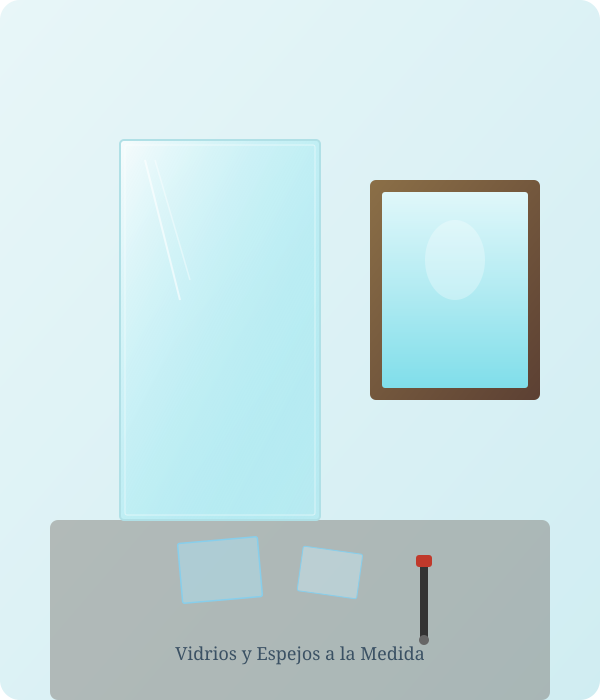
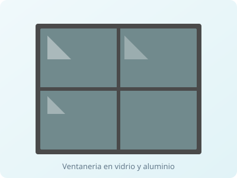
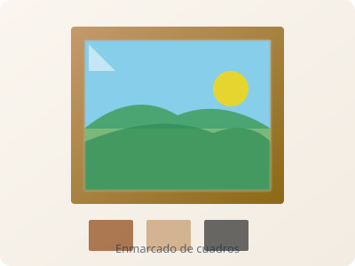
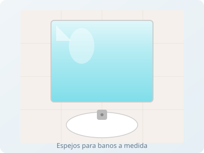
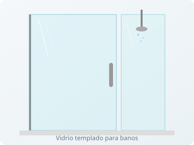

Vidrios a la medida
Corte e instalación de vidrio para ventanas, puertas, mesas y vitrinas. Vidrio común, de seguridad y decorativo.
En Clarismar trabajamos el vidrio y el espejo con precisión: enmarcado de cuadros, fabricación de espejos, ventanería y vidrios templados. Más de 8 años brindando los mejores precios del suroccidente.

Cristalero · Cl. 69 #35-07
Cierra a las 2:00 p.m.Soluciones en vidrio y espejo para hogar, oficina y locales comerciales, con instalación y precios insuperables.
Corte e instalación de vidrio para ventanas, puertas, mesas y vitrinas. Vidrio común, de seguridad y decorativo.
Fabricación de espejos para baños, gimnasios, vestidores y decoración. Biselados, con marco o sin marco.
Enmarcamos cuadros, diplomas, fotografías y obras de arte con molduras y acabados a tu gusto.
Diseño e instalación de ventanas y divisiones en vidrio y aluminio para hogares y comercios.
Vidrio templado de alta resistencia para divisiones de baño, barandas, puertas y fachadas.
Te asesoramos en el material ideal para tu proyecto y entregamos cotización rápida y honesta.
Algunos de los trabajos que realizamos en vidrio, espejo, enmarcado y ventanería.




Somos un taller de cristalería reconocido por la calidad de nuestros trabajos y la atención cercana. Nuestros clientes nos eligen por la precisión en el corte, el cumplimiento y unos precios que marcan la diferencia frente a los demás.
Excelente servicio y precios insuperables, recomendado para enmarcar cualquier tipo de cuadros o la fabricación de espejos.
Muy bueno, buena atención y los productos a un mejor precio en comparación a los demás.
Los mejores precios y servicio en vidrios y enmarcados.
Excelentes trabajando con el vidrio.
Aspectos positivos: capacidad de respuesta, puntualidad, calidad y profesionalismo.
Buenísimo, ¡felicitaciones!
Pasa por nuestro taller o escríbenos para cotizar tu proyecto en vidrio o espejo. Te respondemos rápido.